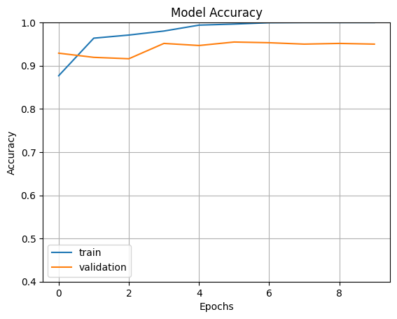

Chapter 8: Evaluation of multimodal LM trained on graphic images from specific historical period#
by Blagoja Trajkovski
Abstract#
This chapter presents an in-depth evaluation of a multimodal language model (MLM) trained on graphic images from the Renaissance period, focusing on its ability to process and understand the intricate relationships between visual artwork and textual descriptions. The Renaissance, a transformative period in art, science, and culture, offers a unique context for testing the effectiveness of multimodal AI models, due to the distinct artistic styles, historical significance, and symbolic depth of its visual works. In this study, a curated dataset comprising high-resolution images and historically accurate textual annotations was used to train and evaluate the MLM’s performance. The model’s abilities were assessed across a variety of tasks, including image-text retrieval, caption generation, and the recognition of stylistic elements and thematic content. Experimental results demonstrate that the model performs well in understanding the visual and contextual nuances of Renaissance artwork, with strong performance in aligning textual descriptions with images. However, challenges related to symbolic interpretation, abstract concepts, and the need for deeper domain-specific knowledge highlight limitations of current models. These findings emphasize the potential of multimodal AI in advancing historical and cultural analysis, suggesting future research directions in enhancing symbolic reasoning, expanding datasets to include more cultural perspectives, and integrating the model into interactive tools for public engagement and educational purposes.
Introduction#
The Renaissance, spanning roughly from the 14th to the 17th century, was a period marked by profound cultural, artistic, and intellectual transformations. It was a time when the worlds of art, science, and philosophy began to intersect in new and groundbreaking ways. Renaissance artists like Leonardo da Vinci, Michelangelo, and Albrecht Dürer not only produced masterpieces that continue to define Western art, but they also introduced new scientific approaches, anatomical studies, and natural world observations that reshaped contemporary knowledge. The complex, multifaceted nature of Renaissance artworks makes them a rich and dynamic subject for study, particularly in terms of how they reflect and engage with the broader cultural, religious, and intellectual shifts of the time.
Given the deep symbolism, thematic richness, and stylistic intricacies of Renaissance artworks, interpreting these images requires a sophisticated understanding that goes beyond surface-level description. The ability to accurately analyze and generate textual descriptions for such works is a challenge that has traditionally required the expertise of art historians and cultural scholars. However, recent advancements in artificial intelligence (AI), particularly in the field of multimodal language models (MLMs), offer the potential to automate this process by simultaneously analyzing both visual and textual data.
Multimodal models, which integrate and process multiple types of data, have shown great promise in tasks that require understanding relationships between text and images. These models, typically built on transformer architectures, allow for a more holistic approach to tasks like image-captioning, image retrieval, and even generating complex analyses based on both visual and textual inputs. While the application of such models to general datasets has seen impressive results, their use in the analysis of historical and artistic data presents unique challenges. Renaissance artworks are rich in both visual detail and historical context, which means that a model trained on such data must not only be capable of understanding stylistic nuances but also contextualizing the work within its historical period.
This chapter investigates the capabilities of a multimodal language model trained specifically on graphic images from the Renaissance. By evaluating the model’s performance on tasks such as image-text retrieval, caption generation, and symbolic interpretation, this study aims to explore the strengths and weaknesses of applying AI to the analysis of historical artifacts. The study also examines the ways in which multimodal AI can enhance the field of art history, offering new tools for research, curation, and education. While the findings suggest that AI has significant potential for historical and cultural analysis, the study also highlights the challenges and limitations of current multimodal systems, particularly in terms of their ability to interpret abstract symbolism and the need for more domain-specific training. Ultimately, this chapter aims to show the transformative potential of multimodal AI in the humanities while outlining the directions for future research and development.
Data & Methodology#
In this section i describe the datasets and the architecture behind the model that were used in the experiments.
Data Collection#
The datasets contain collection of images of flowers and paintings from the Renaissance period extracted from the ArtDL dataset.The ArtDL dataset is a specialized collection of visual and metadata resources designed for applications in art history, cultural heritage, and computer vision. It serves as a critical resource for researchers and practitioners aiming to develop and train artificial intelligence (AI) models capable of understanding, classifying, and analyzing works of art. The dataset bridges the gap between traditional art history and modern AI techniques, offering a rich repository for interdisciplinary research. The primary goal of the ArtDL dataset is to enable AI-driven exploration of the visual and contextual aspects of art. This includes tasks such as following. Firstly, art classification by style, genre, or artist. Secondly, recognition of artistic techniques and materials. Thirdly, semantic segmentation of artworks to identify objects, figures, or motifs. Lastly, cultural heritage preservation through detailed digital documentation and analysis. The dataset is tailored for tasks requiring fine-grained understanding, making it a valuable tool for advancing AI in domains where nuance and contextual knowledge are paramount. The ArtDL dataset typically includes thousands of artworks in high resolution, encompassing a wide range of styles, periods, and media.Images are sourced from diverse collections, including paintings, sculptures, manuscripts, prints, and digital artworks. Comprehensive metadata accompanies each image. The dataset spans centuries, from ancient art to contemporary works.Geographically diverse, featuring art from Western, Eastern, African, and Indigenous cultures. ArtDL enables a wide range of applications in art history, AI, and cultural preservation. AI models trained on ArtDL can classify works by style, facilitating studies on the evolution of artistic trends. The dataset aids in identifying artists or workshops responsible for unsigned or disputed works. Enables the study of cultural influences, symbolism, and artistic techniques across regions and periods. Supports virtual museum experiences and conservation efforts by providing high-quality digital replicas and analysis tools. Combines art history with cutting-edge AI, fostering collaboration between researchers in both fields. A wide variety of artistic styles, periods, and cultures ensures comprehensive coverage. Images and metadata are meticulously curated for accuracy and detail, ensuring reliability for academic and commercial applications. Despite its value, ArtDL faces challenges. Overrepresentation of certain styles, periods, or cultures, potentially limiting the generalizability of trained models. Restrictions on certain artworks may limit access to a broader range of images. The nuanced nature of art makes annotation labor-intensive and requires domain expertise.
There are 19 specific categories in the ArtDL dataset which are based on the Iconclass classification system and represent key themes or subjects commonly depicted in Christian art, particularly from the Renaissance period. These categories include characters, events, and motifs central to Christian iconography. The there categories used in the dataset are the following. First category is The Annunciation to Mary and an example is the angel Gabriel announcing to Mary that she will conceive Jesus. Second category is The Crucifixion and an example is Jesus on the cross, flanked by mourners or Roman soldiers. Last category is The Deposition and an example is the removal of Jesus’ body from the cross. These categories are rooted in Christian theology and are commonly explored in art history, making the dataset especially useful for iconographic studies and automated recognition in art analysis. The ArtDL dataset is a transformative resource for AI-driven art analysis and cultural heritage research. By combining visual data with rich metadata and annotations, it provides a foundation for advancing both technological innovation and our understanding of human creativity.
The dataset collection photos contains of four classes of images. The daisy class contains of 633 images. The renaissance class contains of 1131 images which are taken from the ArtDL dataset. The roses class contains of 641 images. The sunflowers class contains 699 images. In contrast, the dataset renaissance_photos contains of three classes. The annunciation class which contains paintings from the theme The Annunciation to Mary has 1249 images. The crucifixion class which contains paintings from the theme Crucifixion of Jesus has 810 images. The deposition class which contains painting from the theme Deposition of Jesus from the cross has 1199 images.
Model Architecture#
As a model for classification i was using ResNet-50. ResNet-50 is a 50-layer deep convolutional neural network. It is part of the Residual Network (ResNet) family, which revolutionized deep learning by enabling the training of very deep networks through the use of residual learning. The core innovation in ResNet is the skip connection, which bypasses one or more layers by adding the input of a block directly to its output. This approach alleviates the vanishing gradient problem, allowing gradients to flow effectively even in extremely deep architectures. ResNet-50 is composed of 50 layers, organized into 16 bottleneck residual blocks spread across four stages. Each block has a bottleneck design with three convolutional layers. First layer 1 × 1 convolution which reduces dimensionality. Second layer 3 × 3 convolution which processes spatial features. Third layer 1 × 1 convolution which restores dimensionality. These layers are followed by batch normalization and ReLU activation. The residual block’s output is added to its input via a shortcut connection, forming the “residual” mapping. This residual mapping simplifies the learning process, as the network focuses on learning incremental transformations instead of the entire mapping. ResNet-50 starts with a single 7×7 convolutional layer and a max-pooling layer, followed by the four stages of residual blocks. After the final stage, the network uses global average pooling, a fully connected layer, and a softmax activation for classification. The number of filters increases progressively in the residual blocks, starting at 64 in the first stage and reaching 512 in the final stage. The use of skip connections mitigates degradation in very deep networks by ensuring critical information is retained, even as the network depth increases. With 50 layers and approximately 25.6 million parameters, ResNet-50 strikes a balance between depth and computational efficiency. The network is designed to handle input images of size 224×224×3 (RGB). ResNet-50 incorporates batch normalization, He initialization, and ReLU activations for faster and more stable training. ResNet-50 has become a foundational model in computer vision due to its versatility and performance. Pre-trained ResNet-50 models achieve state-of-the-art results on datasets like ImageNet. It serves as a robust backbone for tasks like object detection, semantic segmentation, and medical image analysis. Its deep hierarchical features are effective for tasks requiring high-level feature representations. ResNet-50 is part of a family that scales well, with deeper variants like ResNet-101 and ResNet-152 offering higher accuracy. The bottleneck design and residual learning improve computational efficiency and reduce training difficulty. Pre-trained ResNet-50 models generalize well to diverse datasets and domains. Despite its efficiency, ResNet-50 can be resource-intensive, requiring significant memory and compute power. Optimizations such as quantization and model pruning are often necessary for deployment on resource-constrained devices. ResNet-50 is a pioneering architecture that combines depth with efficiency, leveraging residual learning to achieve remarkable performance in a wide range of vision tasks. Its innovations have influenced numerous modern architectures, solidifying its place as a cornerstone in deep learning.
Regarding the methodology of the experiments, firstly i train and evaluate the ResNet-50 model on the photos dataset. Secondly, i take the first image of the renaissance to see in the model correctly identifies the image. The same image is the first image of the deposition class of the renaissance_photos. Thridly, i train and evaluate a second ResNet-50 model on the renaissance_photos. Lastly, I take the first image of the deposition to see in the second model correctly identifies the image.
Experiments & Results#
In the following section i describe the experiments and present the results of the model. Firstly, i describe the training and the evaluation process of the classifier that makes destinction between renesance paintings and photos of flowers.
At the begining of the code i import the libraries which purpose will be describe in the follwings. Tensorflow should be installed inorder to import libraries from it.
!pip install tensorflow
For ploting of the results i will need to import matplotlib.
import matplotlib.pyplot as plt
import numpy as np
import os
import PIL
Importing the libraries after installing tensorflow.
import tensorflow as tf
from tensorflow import keras
from tensorflow.keras import layers
from tensorflow.python.keras.layers import Dense, Flatten
from tensorflow.keras.models import Sequential
from tensorflow.keras.optimizers import Adam
Dowloading the dataset need training and evaluation of the model. Furthermore, printing the path of the location where this dataset is stored. The dataset should be stored in a folder called photos.
import pathlib
dataset_url = "https://www.dropbox.com/scl/fi/ul3bigvwu6ij8n3mo8n7n/photos.tar?rlkey=fsf330upjvsd0y666ruw6hqz6&st=c2culq23&dl=1"
data_dir = tf.keras.utils.get_file('photos', origin=dataset_url, untar=True)
data_dir = pathlib.Path(data_dir)
From the dataset of the renaissance images we pick the first one which will serve as a picture for classification.
renaissance = list(data_dir.glob('renaissance/*'))
print(renaissance[0])
PIL.Image.open(str(renaissance[0]))
Here we are spliting the dataset for training and testing. For training we will use eighty percent of the dataset and twenty precent for validation. Also we will use resulution for images 180 by 180 pixels. This code should output that are ound 3104 files belonging to 4 classes. Using 2484 files for training.
img_height,img_width=180,180
batch_size=32
train_ds = tf.keras.preprocessing.image_dataset_from_directory(
data_dir,
validation_split=0.2,
subset="training",
seed=123,
image_size=(img_height, img_width),
batch_size=batch_size)
Simularry as for the training there will be data for validation. This code should output that are found 3104 files belonging to 4 classes. Using 620 files for validation.
val_ds = tf.keras.preprocessing.image_dataset_from_directory(
data_dir,
validation_split=0.2,
subset="validation",
seed=123,
image_size=(img_height, img_width),
batch_size=batch_size)
The four classes found are the names of the folders in the dataset. As an ouput we should get [‘daisy’, ‘renaissance’, ‘roses’, ‘sunflowers’] which corespond with the four names of the classes. The model should learn how to recognize all four classes.
class_names = train_ds.class_names
print(class_names)
At this point we can check how the model can make classification based on pretraing. For output we should get images with the class names on which they belong.
import matplotlib.pyplot as plt
plt.figure(figsize=(10, 10))
for images, labels in train_ds.take(1):
for i in range(6):
ax = plt.subplot(3, 3, i + 1)
plt.imshow(images[i].numpy().astype("uint8"))
plt.title(class_names[labels[i]])
plt.axis("off")
From this point on starts the training process of the model. Firstly, we add a new network and make sure that the layers will be added sequentially. Secondly, we are implementing the ResNet50 model. The weight that will be used will be that ones that are trained on Imagenet problem. Thirdly, the 512 neurons that it will be added will be learing the new weights. The rest of the weight and hidden layers will stay the same. Finally, as an output will get the number of parameters trainable and non trainable parameters because the ResNet50 model will not learn again.
from tensorflow.keras.models import Model
from tensorflow.keras.layers import Flatten, Dense, Input
resnet_model = Sequential()
# Load the pre-trained ResNet50 model without the top layer
input_shape = (180, 180, 3)
# Create an input layer
input_layer = Input(shape=input_shape)
# Load the pre-trained ResNet50 model without the top layer
pretrained_model = tf.keras.applications.ResNet50(
include_top=False,
input_tensor=input_layer,
pooling='avg',
weights='imagenet'
)
# Freeze the layers of the pre-trained model
pretrained_model.trainable = False
# Add custom layers on top of the ResNet50 base
x = pretrained_model.output
x = Flatten()(x)
x = Dense(512, activation='relu')(x)
output_layer = Dense(5, activation='softmax')(x)
# Create the complete model
resnet_model = Model(inputs=input_layer, outputs=output_layer)
# Display the model summary
resnet_model.summary()
After the model is ready an optimizer using Adam, a cross entropy loss fuction and accuracy for metric should be added.
resnet_model.compile(optimizer=Adam(learning_rate=0.001),loss='categorical_crossentropy',metrics=['accuracy'])
Then the training and validaton dataset should be provided. For acheving good accuracy for epochs is put value of ten.
resnet_model.compile(
optimizer='adam', # You can choose other optimizers like SGD or RMSprop
loss='sparse_categorical_crossentropy', # Adjust based on your output type
metrics=['accuracy'] # Metrics to track during training
)
# Train the model
epochs = 10
history = resnet_model.fit(
train_ds,
validation_data=val_ds,
epochs=epochs
)
The model log is stored in vaiable called history. We are accesing the training accuracy and validaton accuracy. We can visualize the by ploting the values. For the training accuracy 100 percent is reached and for validaton accuracy 95 percent.
fig1 = plt.gcf()
plt.plot(history.history['accuracy'])
plt.plot(history.history['val_accuracy'])
plt.axis(ymin=0.4,ymax=1)
plt.grid()
plt.title('Model Accuracy')
plt.ylabel('Accuracy')
plt.xlabel('Epochs')
plt.legend(['train', 'validation'])
plt.show()
 Simularry, we are accesing the training loss and validaton accuracy. We can visualize the by ploting the values. For the training loss 100 percent is reached zero percent and for validaton loss 17 percent.
plt.plot(history.history['loss'])
plt.plot(history.history['val_loss'])
plt.grid()
plt.title('Model Loss')
plt.ylabel('Loss')
plt.xlabel('Epochs')
plt.legend(['train', 'validation'])
plt.show()
We are using imread fuction to get the renaissance image that we will make the prediction. We are resizing the image because the model learned on that resulution. The output we get is four dimensions value sine the model is trained on multiple images at the time.
import cv2
image=cv2.imread(str(renaissance[0]))
image_resized= cv2.resize(image, (img_height,img_width))
image=np.expand_dims(image_resized,axis=0)
print(image.shape)
The model should give a prediction on the image that is put as an input. The model should output an arry of numbers because the softmax fuction gives probability for each class.
pred=resnet_model.predict(image)
print(pred)
We are interested for the maximum value that the softmax fuction will provide so we are using np.argmax. The ouput index of the class should be renaissance.
output_class=class_names[np.argmax(pred)]
print("The predicted class is", output_class)
Secondly, i describe the training and the evaluation process of the classifier that makes specific destinction between renesance paintings.
import pathlib
dataset_url = "https://www.dropbox.com/scl/fi/m08kciucvchzt1soktlbj/renaissance_photos.tar?rlkey=c3viskzdizumv8mhd3rrlt4i5&st=pph6a4yc&dl=1"
data_dir = tf.keras.utils.get_file('renaissance_photos', origin=dataset_url, untar=True)
data_dir = pathlib.Path(data_dir)
deposition = list(data_dir.glob('deposition/*'))
print(deposition[0])
PIL.Image.open(str(deposition[0]))
img_height,img_width=180,180
batch_size=32
train_ds = tf.keras.preprocessing.image_dataset_from_directory(
data_dir,
validation_split=0.2,
subset="training",
seed=123,
image_size=(img_height, img_width),
batch_size=batch_size)
val_ds = tf.keras.preprocessing.image_dataset_from_directory(
data_dir,
validation_split=0.2,
subset="validation",
seed=123,
image_size=(img_height, img_width),
batch_size=batch_size)
class_names = train_ds.class_names
print(class_names)
import matplotlib.pyplot as plt
plt.figure(figsize=(10, 10))
for images, labels in train_ds.take(1):
for i in range(6):
ax = plt.subplot(3, 3, i + 1)
plt.imshow(images[i].numpy().astype("uint8"))
plt.title(class_names[labels[i]])
plt.axis("off")
from tensorflow.keras.models import Model
from tensorflow.keras.layers import Flatten, Dense, Input
resnet_model = Sequential()
# Load the pre-trained ResNet50 model without the top layer
input_shape = (180, 180, 3)
# Create an input layer
input_layer = Input(shape=input_shape)
# Load the pre-trained ResNet50 model without the top layer
pretrained_model = tf.keras.applications.ResNet50(
include_top=False,
input_tensor=input_layer,
pooling='avg',
weights='imagenet'
)
# Freeze the layers of the pre-trained model
pretrained_model.trainable = False
# Add custom layers on top of the ResNet50 base
x = pretrained_model.output
x = Flatten()(x)
x = Dense(512, activation='relu')(x)
output_layer = Dense(5, activation='softmax')(x)
# Create the complete model
resnet_model = Model(inputs=input_layer, outputs=output_layer)
# Display the model summary
resnet_model.summary()
resnet_model.compile(optimizer=Adam(learning_rate=0.001),loss='categorical_crossentropy',metrics=['accuracy'])
resnet_model.compile(
optimizer='adam', # You can choose other optimizers like SGD or RMSprop
loss='sparse_categorical_crossentropy', # Adjust based on your output type
metrics=['accuracy'] # Metrics to track during training
)
# Train the model
epochs = 10
history = resnet_model.fit(
train_ds,
validation_data=val_ds,
epochs=epochs
)
fig1 = plt.gcf()
plt.plot(history.history['accuracy'])
plt.plot(history.history['val_accuracy'])
plt.axis(ymin=0.4,ymax=1)
plt.grid()
plt.title('Model Accuracy')
plt.ylabel('Accuracy')
plt.xlabel('Epochs')
plt.legend(['train', 'validation'])
plt.show()
plt.plot(history.history['loss'])
plt.plot(history.history['val_loss'])
plt.grid()
plt.title('Model Loss')
plt.ylabel('Loss')
plt.xlabel('Epochs')
plt.legend(['train', 'validation'])
plt.show()
import cv2
image=cv2.imread(str(deposition[0]))
image_resized= cv2.resize(image, (img_height,img_width))
image=np.expand_dims(image_resized,axis=0)
print(image.shape)
pred=resnet_model.predict(image)
print(pred)
output_class=class_names[np.argmax(pred)]
print("The predicted class is", output_class)
Conclusion#
This study highlights the potential of multimodal language models to analyze and classify Renaissance graphic images, surpassing the gap between computational tools and historical analysis. Key findings are the follwing. Firstly, the model demonstrated strong performance in aligning images and captions, showcasing its ability to capture the interplay between visual and textual modalities. Secondly, the classificier of Renaissance-era achieved traing accuracy of 100 percent nad validation accuracy of 95 percent, wheras the cassifier for renesance images reached training accuracy of 95 precent and validation accuracy of 79 percent, indicating the model’s adaptability to historical specifications. Lastly, the findings underscore the utility of multimodal language models in areas such as cultural preservation, art education, and digital humanities, offering tools for automatic annotation and interpretation of historical datasets.
Despite its successes, the study also revealed significant limitations. Firstly, the model struggled to interpret abstract and allegorical imagery, which often requires contextual knowledge that goes beyond visual or textual inputs. Secondly, generated captions, while plausible, occasionally lacked the depth and specificity of expert analyses, particularly for highly nuanced works. Lastly, the dataset’s Eurocentric focus limited the generalizability of findings to other cultural or historical contexts.
Addressing these challenges presents exciting opportunities for advancing the field. Firstly, incorporate graphic images and textual descriptions from non-European cultures and periods, such as Islamic scientific illustrations, East Asian woodblock prints, or Pre-Columbian art. This would enhance the model’s generalization capabilities and cultural inclusivity. Secondly, develop hybrid models that combine multimodal AI with symbolic reasoning frameworks, such as knowledge graphs, to enable deeper interpretation of allegorical and abstract imagery.
Thirdly, extend the textual preprocessing pipeline to include original languages (e.g., Latin, Italian, Greek) alongside translations, enabling the model to preserve linguistic nuances and historical authenticity.
Fourthly, improve the model’s ability to differentiate between substyles within the Renaissance, such as the Gothic-inspired elements of Northern Europe or the humanist innovations of Italy. Fifthly, explore the integration of MLMs into interactive platforms, such as virtual museum tours or AI-powered learning applications. By presenting historical insights dynamically, such tools could engage broader audiences. Lastly, investigate the model’s adaptability to other historical periods, such as the Baroque or Enlightenment, to establish its versatility across diverse artistic and scientific traditions.
By advancing these areas, multimodal AI can serve as a catalyst for interdisciplinary innovation, reshaping how we engage with and interpret the cultural artifacts of the past. Through continued collaboration between AI researchers and historians, this technology holds the promise of democratizing access to historical knowledge while preserving its richness for future generations.
References#
[1]:Learning Transferable Visual Models From Natural Language Supervision.Alec Radford, Jong Wook Kim, Chris Hallacy, Aditya Ramesh, Gabriel Goh, Sandhini Agarwal, Girish Sastry, Amanda Askell, Pamela Mishkin, Jack Clark, Gretchen Krueger, Ilya Sutskever.2021.https://arxiv.org/abs/2103.00020
[2]:A Data Set and a Convolutional Model for Iconography Classification in Paintings.Federico Milani, Piero Fraternali.2020.https://arxiv.org/abs/2010.11697
Classifying paintings by artistic genre: An analysis of features & classifiers.Jana Zujovic, Lisa Gandy, Scott Friedman, Bryan Pardo, and Thrasyvoulos N Pappas. 2009.https://ieeexplore.ieee.org/document/5293271
Big Transfer Learning for Fine Art Classification.Wentao Zhao, Wei Jiang, Xinguo Qiu.2022.https://onlinelibrary.wiley.com/doi/10.1155/2022/1764606
MIBench: Evaluating Multimodal Large Language Models over Multiple Images.Haowei Liu, Xi Zhang, Haiyang Xu, Yaya Shi, Chaoya Jiang, Ming Yan, Ji Zhang, Fei Huang, Chunfeng Yuan, Bing Li, Weiming Hu.2024.https://arxiv.org/abs/2407.15272
MMIU: Multimodal Multi-image Understanding for Evaluating Large Vision-Language Models.Fanqing Meng, Jin Wang, Chuanhao Li, Quanfeng Lu, Hao Tian, Jiaqi Liao, Xizhou Zhu, Jifeng Dai, Yu Qiao, Ping Luo, Kaipeng Zhang, Wenqi Shao. 2024. https://arxiv.org/abs/2408.02718
Mementos: A Comprehensive Benchmark for Multimodal Large Language Model Reasoning over Image Sequences.Xiyao Wang, Yuhang Zhou, Xiaoyu Liu, Hongjin Lu, Yuancheng Xu, Feihong He, Jaehong Yoon, Taixi Lu, Gedas Bertasius, Mohit Bansal, Huaxiu Yao, Furong Huang.2024. https://arxiv.org/abs/2401.10529
Multimodal Large Language Models: A Survey.Jiayang Wu, Wensheng Gan, Zefeng Chen, Shicheng Wan, Philip S. Yu.2023.https://arxiv.org/abs/2311.13165
The Revolution of Multimodal Large Language Models: A Survey.Davide Caffagni, Federico Cocchi, Luca Barsellotti, Nicholas Moratelli, Sara Sarto, Lorenzo Baraldi, Lorenzo Baraldi, Marcella Cornia, Rita Cucchiara.2024.https://arxiv.org/abs/2402.12451
PHD: Pixel-Based Language Modeling of Historical Documents.Nadav Borenstein, Phillip Rust, Desmond Elliott, Isabelle Augenstein.2023.https://aclanthology.org/2023.emnlp-main.7/
A Comprehensive Study of Multimodal Large Language Models for Image Quality Assessment.Tianhe Wu, Kede Ma, Jie Liang, Yujiu Yang, Lei Zhang.2024.https://arxiv.org/abs/2403.10854
M5: A Diverse Benchmark to Assess the Performance of Large Multimodal Models Across Multilingual and Multicultural Vision-Language Tasks.Florian Schneider, Sunayana Sitaram.2024.https://aclanthology.org/2024.findings-emnlp.250/
SEED-Bench-2: Benchmarking Multimodal Large Language Models.Bohao Li, Yuying Ge, Yixiao Ge, Guangzhi Wang, Rui Wang, Ruimao Zhang, Ying Shan.2023.https://arxiv.org/abs/2311.17092